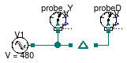

Package with example models
This package contains examples for the use of models that can be found in Buildings.Electrical.AC.ThreePhasesUnbalanced.Interfaces.
Extends from Modelica.Icons.ExamplesPackage (Icon for packages containing runnable examples).
| Name | Description |
|---|---|
| WyeToDelta | Test for Y to D connection |
Test for Y to D connection

This simple example shows how to use a Y to D adapter.
The probe probe_Y mesaures the phase voltages before they
are converted into D. Their RMS value is equal to 480/sqrt(3) V.
The probe probe_D measures the phase
voltages after the conversion to D. Their RMS value is equal to 480 V,
the line voltage provided by the voltage source.